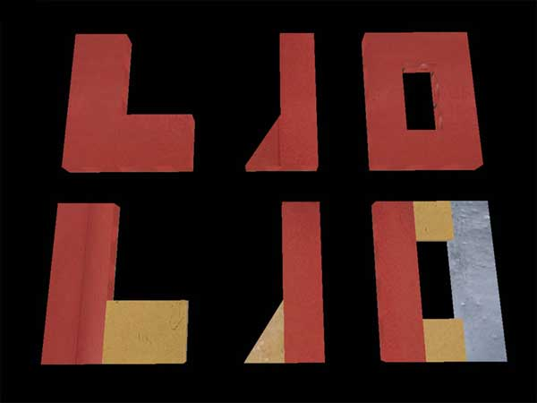
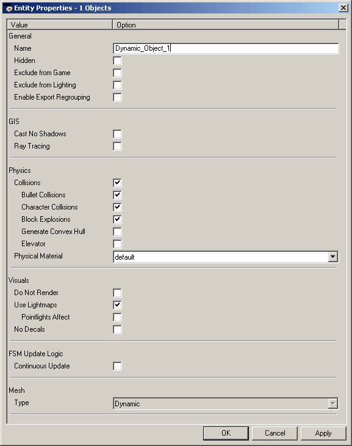
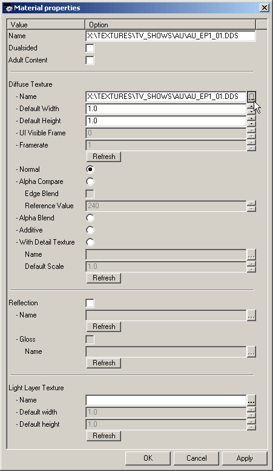

|
Dynamic objects and object animations
Dynamic objects (DOs) are objects that have various dynamic properties such as scripted animations. You build doors, elevators, breakables, explosives and such out of dynamic objects. All the physical objects are also dynamic objects that have just been released to physics.
To create a DO
1. Create a normal static mesh in F3 mode.
2. Selected the object in F5 mode and press D
- MaxED prompts for confirmation to turn the object dynamic.
3. Click "Yes"
- MaxED 2.0 prompts "Keep lightmaps", which affects the "Use lightmaps" object property, which can be toggled on and off at any time.
- If "Use lightmaps" is set, the object will be lit using static lightmaps just like normal geometry (you can still set it to not cast shadows if needed), otherwise it will use dynamic
(Gouraud) lighting.
To turn a DO into static object use Shift-D
DOs that have collisions enabled must not be concave in any way (i.e. "hollowed or rounded inward like the inside of a bowl"), because the collision system cannot really handle such shapes efficiently. All the DOs that must be concave can be built out of multiple convex sub-parts though, much like you build geometry for Quake engines. If you have concave colliding DOs in the level, the editor will refuse to export the level to the game and will report the invalid
objects.
To build concave collisions out of multiple convex objects, you can simply group the convex objects as static objects to the DO. They will be collapsed during the export and in the game they will be a single object with multiple sub-parts.
There are three collision flags in the object properties that are important here;
- Collisions
- Bullet Collisions
- Character Collisions
The "Collisions" flag can be used to toggle all the collisions on or off for the particular sub-part or the "parent DO". It doesn't inherit to the sub-parts of the object so if you want to have the actual DO or some sub-parts of the object non-colliding, use this flag.
The "Bullet Collisions" and "Character Collisions" flags are inherited to the sub-parts and are actually read ONLY from the "parent" DO object. These
flags are basically used to determine the collision type of the whole resulting DO.
In some cases where you have a concave object, you can use the "Generate Convex hull" object property to generate a convex hull around the object that encloses all the concavities it has.
Also notice here that even misaligned T-vertices may cause an object to become concave even when you cannot really see this in the editor.
Sometimes if the DOs have a lot of colliding polygons, it is good idea to create a simple fake collision object to speed up the framerate. This can be done by adding a simple static object as a sub-part to the parent DO, and then setting the flag "Do not render" to this fake collision object. You can also set "No decals" flag to the parent DO if you would otherwise have decals hovering in the air. Note that the parent DO needs to have its own "Collisions" flag off so you don't generate merely extra overhead to the system.
Next picture will still demonstrate how to create differently shaped dynamic objects properly.

Objects in the upper row are concave, and thus illegal to be dynamic objects. The red objects in the lower row are proper convex dynamic objects. The objects with other
colors are static objects that are grouped to the red parent DOs and will be part of the DOs' collision shape once exported to the game. In this case the parent DOs have their collision on since they are also low detail and don't need a separate collision and render geometry.
DO Properties
Select object in F5 mode and press enter to see the properties of a DO. The properties can also be accessed from the hierarchy view by selecting the DO, pressing RMB (right mouse button) and selecting properties or from MMB (middle mouse button) menu. The properties are partially same than for static objects, here are the properties that are specific for
DOs:

- Block Explosions: If checked, the DO will block damage from explosions; otherwise the explosion will cause damage to receiver even when the receiver is in cover behind the DO. Should be off for tiny objects and on for objects that are large enough for cover.
- Generate Convex Hull: If checked the exporter will generate a convex hull to be used as collision geometry.
- Elevator: Turn this on if the DO is used as an elevator. It changes the DO
behavior slightly against the collision capsules of the characters when the DO is moving in scripted animation in straight vertical line.
- Physical Material: If the DO is released to physics with DO_EnablePhysics, this is what physical properties the object will have (weight, sounds)
- Use lightmaps: If turned on, the object will use lightmaps for lighting, otherwise dynamic lighting is used.
- No decals: If on, the DO will not receive any decals (bullet hit marks etc)
- Continuous update: If on, the object will be updated all the time, meaning it will animate even when the player is on the other side of the map. This should be on for most objects that use scripted animations. The exceptions are objects that animate constantly but wouldn't need to when they aren't visible, like rotating fans and such.
DO scripted animation
DOs can be animated by defining keyframes (positions in the game world) and the length of the animation. The system will then interpolate between keyframes to create the animation in run-time. A DO can have as many keyframes and animations as desired, but each animation can only have 2 keyframes, start position and end position (a DO can not have multiple animations running simultaneously) So if you want to make an object move from position A to Position C through position B, you need to create 3 keyframes and 2 animations, first animation from keyframe A to keyframe B and second animation from keyframe B to keyframe C. Then these animations need to be linked with messages so that when the object reaches 2nd keyframe (B) of the first animation, the second animation is started.
Creating keyframes
Select a DO in F5 mode and press TAB. You will see the Keyframe dialog where you can add, rename and delete keyframes and change some properties. Rename the existing (default) keyframe to 1, add a new keyframe and name it 2. Close the dialog and press N to enable the animation mode. The borders of the screen turn red to indicate that the animation mode is on. Now when you move or rotate the DO, the position of the 2nd keyframe is changed. If you move or rotate the DO while not in animation mode, all of the DOs keyframes will change. Now bring up the keyframe dialog again with TAB in F5 mode and switch between keyframes by double-clicking LMB on the names of the keyframes (1 & 2 in this case). You will see the object move to the selected keyframe. The animation mode does not need to be on anymore, it is needed only when you need to move a single keyframe's position. Note that when rotating the keyframes, use rotate around pivot mode ('A' in F5 mode toggles between pivot and vertex rotate). The animations will always rotate the object around its' pivot point, so if you rotate the keyframes in vertex mode, the results may be undesired. You can change the objects pivot point by pressing p in F5 mode, this will place the objects pivot to where ever the grid
center is.
Creating animations
Select the object in F5 mode and press Shift+Tab. You will see the animation dialog where you can add, rename and delete animations and change some properties. Click
Add, select keyframe 1 as the start keyframe and keyframe
2 as the end keyframe. Click ok and a new animation appears to the animation dialog. By double-clicking LMB on the animation name you can view the animation in MaxED2.
In the animation dialog you can also change the keyframes, length and position and rotation graphs of an animation. With the graphs it is possible to affect the linearity of the animation, movement or rotation can be made to accelerate in the beginning and slow down at the end. Nodes can be added to these graphs by
double-clicking LMB on top of them, pressing delete will remove the currently active (enlarged) node. Try changing the movement graph and then checking out the animation by
double-clicking the animation name in the animation dialog.
Linking animations
Create a room, divide it with exit, and add a jumppoint. Create an object inside one of the rooms with 2 keyframes named "A" and "B" and 2 animations named "1" and "2", first animation from keyframe A to keyframe B and 2nd animation from keyframe B to keyframe A. Now select the object in F5 mode and press b, you will see the FSM dialog. Here you can add various messages to various events the DO has. First add "this->do_animate(1)" to startup event, then add "this->DO_Animate(2)" to animation 1's reaching 2nd keyframe event. Then "Add this->DO_Animate(1)" to animation 2's reaching 2nd keyframe event. Try the map in the framework, Now you should have an object that keeps moving or rotating back and forward between the 2 keyframes you defined. If the object does not move, check that you have the keyframes at different positions (remember the animation mode), the animations are using the right keyframes and the messages are at right positions.
Texture animations
In Max Payne 2 the texture animations are controlled by sending messages to the DOs that have a material with texture animation ability in some (or all) of their polygons.
To create a texture animation we first need to create a material with multiple textures.
1. Create a new material by dragging a texture to the "Material View" (or right-click on material window and select "insert bitmaps")
2. Right-click on the newly created material and select "Properties…" to spawn its properties window.
3. Click on the browse icon of Diffuse Texture Name -field.

4. Multi-select the textures you want to include to the animation as frames (By keeping CTRL or SHIFT pressed).
- Include the original DDS to the multi-selection.
- The textures will be animated in alphabetical order of their filenames regardless of the order of selection.
5. Click "Open"
- The "UI visible frame" and "framerate" fields will become active in the material properties window.
6. Click "OK" to the material properties window.
- An "ANIM" indication will appear onto the material thumbnail in the Material View.
Now we have created a material that can be animated. Next make a DO, and apply this material onto some or all of its surfaces. The the StartUp event of the DO let's add:
This->DO_TextureAnimate( play );
This will start the texture animation at the level startup and keep looping it. The different parameters of the DO_TextureAnimate message are quite self-explanatory.
The framerate material property that we saw earlier cannot handle values less than 1 frames per second. When you want to have slower speeds you can create timers to the FSM of the DO and send DO_TextureAnimate( nextframe ); to advance in frames manually.
In the end let's still mention that a single DO cannot have more than one texture-animating material. And if you get an error message of an object using more than one texture animation when it isn't, it may actually be two DIFFERENT static objects using animating materials (which they would do for no reason as you can't control the texture animation that way), as the whole room-full of static objects are always collapsed into one during export and for the game then it would be this one collapsed object using multiple texture animations.
|